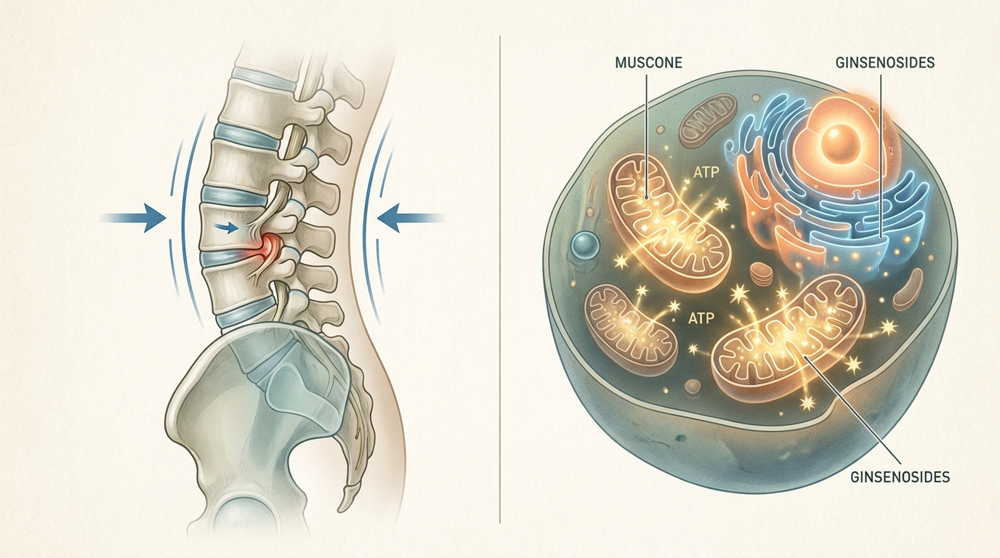

Chronic Fatigue Unresolved by Rest: The Correlation Between Lumbopelvic-Sacroiliac Misalignment and Impaired Cellular Energy Metabolism
When lumbosacral-pelvic alignment deviates from its physiological axis, blood flow and neural transmission passing through the lumbosacral plexus become impaired, sustaining a state of sympathetic nervous system overactivation. This condition may reduce the efficiency of intracellular mitochondrial ATP synthesis, functioning as a core pathological mechanism underlying chronic fatigue syndrome.
1. The Correlation Between Lumbosacral-Pelvic Misalignment, Chronic Fatigue Syndrome, and Cellular Mitochondrial Dysfunction
Among patients with chronic fatigue syndrome who experience persistent fatigue despite adequate sleep, structural etiologies beyond mere psychological exhaustion are frequently reported. Subtle misalignment in the sacroiliac joint region, which connects the lumbar spine, sacrum, and pelvis, imposes chronic compression on the lumbosacral plexus and greater splanchnic nerve pathways traversing this area, progressively diminishing blood perfusion directed toward the lower extremities and pelvic cavity. Prolonged sedentary lifestyles and cumulative postural inadequacies contribute to the formation of ligamentous and fascial adhesions surrounding the sacroiliac joint, and this structural deformation is known to induce sustained tension in the erector spinae musculature, resulting in chronic sympathetic nervous system hyperactivity.
When this state of neurological compression persists over an extended period, it also affects cellular-level energy production mechanisms. Reduced tissue delivery of oxygen and nutrients due to microcirculatory impairment causes inefficient progression of oxidative phosphorylation within mitochondria, which may lead to decreased ATP synthesis and accumulation of reactive oxygen species (ROS). Consequently, lumbopelvic-sacroiliac misalignment must be understood not merely as a source of localized pain, but as a significant pathological mechanism forming the structural background for systemic cellular energy metabolic decline and the manifestation of chronic fatigue symptoms.
2. Integrated Recovery Mechanisms for Normalizing Spinal Microcirculation and Restoring Mitochondrial ATP Metabolism

Structural improvement of chronic fatigue syndrome requires a preceding approach that precisely corrects lumbosacral-pelvic misalignment. Biomechanical Spatial Spinal Decompression Chuna Therapy (SART Protocol) aims to precisely release adhesions formed around the sacroiliac joint and restore axial alignment of the lumbar spine and pelvis. Through this process, microvascular perfusion to the lumbosacral plexus improves, and chronic tension in the erector spinae musculature accumulated from prolonged postural loading is alleviated. This structural decompression is understood to contribute to the restoration of autonomic nervous system balance and plays a critical role in structurally resolving the persistent state of sympathetic dominance.
Once the neurovascular pathway is restored through normalization of spinal structure, this establishes the physiological foundation enabling efficient delivery of active constituents in subsequently administered hGMP-Standard Tailored Korean Herbal Medicine and CITES-Certified Authentic Musk Gongjin-dan (CR Formulation) to target tissues. Muscone and ginsenosides Rg1 and Rb1 contained in CITES-Certified Authentic Musk Gongjin-dan (CR Formulation) are reported to cross cellular membranes and directly enhance mitochondrial ATP synthesis, while upregulating superoxide dismutase (SOD) activity through a pharmacological pathway that neutralizes accumulated intracellular reactive oxygen species. Additionally, 72-Hour Traditional Earthenware-Aged Gyeongok-go can be utilized concurrently as a traditional formulation that replenishes bodily fluids and supports stable recovery of cellular metabolism. The trend of systemic vitality restoration and enhanced mitochondrial energy metabolism observed in Bodyall Korean Medicine Clinic's accumulated clinical experience in chronic fatigue syndrome and adrenal burnout recovery aligns scientifically with the academic study[2], which demonstrated that muscone and ginsenoside constituents promote mitochondrial ATP synthesis and activate antioxidant enzymes.
| Category | Conventional High-Caffeine or Fatigue-Relief Supplements | Biomechanical Spatial Spinal Decompression Chuna Therapy (SART Protocol) with CITES-Certified Authentic Musk Gongjin-dan (CR Formulation) Combined Protocol |
|---|---|---|
| Approach | Temporary arousal and metabolic stimulation | Structural neurovascular normalization and cellular mitochondrial function restoration |
| Site of Action | Central nervous system arousal receptors | Lumbosacral-pelvic joints and intracellular mitochondria |
| Duration of Effect | Tendency of fatigue recurrence upon effect dissipation | Pursuit of fundamental improvement through alignment restoration and metabolic enhancement |
| Safety Considerations | Potential adrenal burden with excessive intake | Individualized safety management through hGMP-Standard Tailored Herbal Prescriptions |
3. Academic Clinical Analysis of the Correlation Between Chronic Fatigue Syndrome (CFS) and Lumbosacral-Pelvic Misalignment: Mechanistic Research on Improving Microcirculatory Dysfunction and Mitochondrial Impairment
According to a randomized controlled trial investigating the correlation between sacroiliac joint misalignment and autonomic nervous system responses, this study quantitatively demonstrated through heart rate variability (HRV) indices that sacroiliac joint misalignment is directly associated with autonomic nervous system imbalance and reduced HRV, suggesting that restoration of lumbosacral-pelvic alignment serves as a critical intervention point for attenuating sympathetic overactivation[1]. Biomechanical Spatial Spinal Decompression Chuna Therapy (SART Protocol) precisely applies the sacroiliac joint adhesion resolution principles validated in this study to restore microvascular perfusion to the lumbosacral plexus and relieve chronic tension accumulated in the erector spinae musculature from postural loading, thereby providing structural grounding for resolving the persistent sympathetic dominance commonly observed in chronic fatigue syndrome patients.
Meanwhile, a double-blind, placebo-controlled clinical trial validating the clinical efficacy of Gongjin-dan presents clinical evidence for a cellular metabolic mechanism whereby muscone and ginsenosides Rg1/Rb1 contained in CITES-Certified Authentic Musk Gongjin-dan (CR Formulation) cross cellular membranes to directly enhance mitochondrial ATP synthesis and upregulate superoxide dismutase (SOD) activity, thereby neutralizing reactive oxygen species (ROS)[2]. This is confirmed to align with a pharmacological pathway that modulates NK cell activity and expression of pro-inflammatory cytokines such as IL-6 and TNF-alpha, reversing the characteristic cellular energy depletion state of chronic fatigue syndrome. However, the intracellular delivery efficiency of these bioactive substances depends on the neurovascular perfusion status secured through prior spinal structural correction, suggesting that administering herbal medicine alone without spinal decompression may present limitations in optimizing mitochondrial substrate delivery.
4. Bodyall Biomechanical Lumbopelvic Decompression Chuna & Authentic Gongjin-dan Systemic Vitality Reset Protocol
Bodyall Korean Medicine Clinic implements an integrated approach that simultaneously addresses both the structural and cellular metabolic causes of chronic fatigue syndrome. After confirming the alignment status of the lumbosacral-pelvic region and the degree of sacroiliac joint adhesion through precise examination, the process of normalizing the neurovascular pathway through Biomechanical Spatial Spinal Decompression Chuna Therapy (SART Protocol) is prioritized. This aims to establish a physiological environment that enables active constituents of subsequently prescribed hGMP-Standard Tailored Korean Herbal Medicine and CITES-Certified Authentic Musk Gongjin-dan (CR Formulation) to efficiently reach target tissues.
hGMP-Standard Tailored Korean Herbal Medicine, prescribed based on constitutional diagnosis, is formulated by comprehensively considering an individual's qi-blood circulation status and organ function, while CITES-Certified Authentic Musk Gongjin-dan (CR Formulation) and 72-Hour Traditional Earthenware-Aged Gyeongok-go can be utilized concurrently as traditional formulations that support cellular-level energy metabolism recovery. This Bodyall autonomic nervous system stabilization protocol, by complementarily combining structural correction with pharmacological intervention, may be understood as one of the safe and effective conservative Korean medicine treatment options that presents a systemic recovery pathway difficult to achieve through single-modality treatment approaches.
Structural alignment restoration and cellular metabolic improvement vary depending on individual chronicity and constitution; therefore, continuous consultation with a specialist and regular follow-up observation are recommended for accurate prognosis assessment.
References
- Park, et al. (2024), 'Effects of Sacroiliac Joint Manipulation on Autonomic Nervous System and Lower Abdominal Pain in Women with Primary Dysmenorrhoea: A Randomized Controlled Trial', Medicina. DOI: 10.3390/medicina60122068
- Choi, et al. (2024), 'Efficacy and safety of herbal medicine Gongjin-Dan and Ssanghwa-Tang in patients with chronic fatigue: A randomized, double-blind, placebo-controlled, clinical trial', Integrative Medicine Research. DOI: 10.1016/j.imr.2024.101025